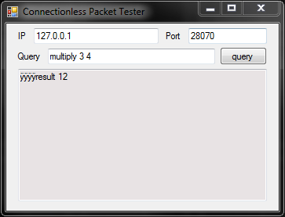

1 void ConnectionlessPacketReceived(byte IP0, byte IP1, byte IP2, byte IP3);
2
3 /*
4 ================
5 vmMain
6
7 This is the only way control passes into the module.
8 This must be the very first function compiled into the .q3vm file
9 ================
10 */
11 int vmMain( int command, int arg0, int arg1, int arg2, int arg3, int arg4, int arg5, int arg6, int arg7, int arg8, int arg9, int arg10, int arg11 ) {
12 switch ( command ) {
13 case GAME_INIT:
14 G_InitGame( arg0, arg1, arg2 );
15 return 0;
16 case GAME_SHUTDOWN:
17 G_ShutdownGame( arg0 );
18 return 0;
19 case GAME_CLIENT_CONNECT:
20 return (int)ClientConnect( arg0, arg1, arg2 );
21 case GAME_CLIENT_THINK:
22 ClientThink( arg0 );
23 return 0;
24 case GAME_CLIENT_USERINFO_CHANGED:
25 ClientUserinfoChanged( arg0 );
26 return 0;
27 case GAME_CLIENT_DISCONNECT:
28 ClientDisconnect( arg0 );
29 return 0;
30 case GAME_CLIENT_BEGIN:
31 ClientBegin( arg0, qtrue );
32 return 0;
33 case GAME_CLIENT_COMMAND:
34 ClientCommand( arg0 );
35 return 0;
36 case GAME_RUN_FRAME:
37 G_RunFrame( arg0 );
38 return 0;
39 case GAME_CONSOLE_COMMAND:
40 return ConsoleCommand();
41 case BOTAI_START_FRAME:
42 return BotAIStartFrame( arg0 );
43 case GAME_ROFF_NOTETRACK_CALLBACK:
44 G_ROFF_NotetrackCallback( &g_entities[arg0], (const char *)arg1 );
45 return 0;
46 // JK2MF: receiving the JK2MF_CONNECTIONLESS_PACKET event
47 case JK2MF_CONNECTIONLESS_PACKET:
48 ConnectionlessPacketReceived(arg0, arg1, arg2, arg3);
49 return 0;
50 }
51
52 return -1;
53 }
54
55 void ConnectionlessPacketReceived(byte IP0, byte IP1, byte IP2, byte IP3)
56 {
57 char cmd[MAX_TOKEN_CHARS];
58 char num1[10], num2[10];
59 trap_Argv(0, cmd, sizeof(cmd));
60
61 if ( !strcmp(cmd, "multiply") )
62 {
63 int n1, n2;
64
65 trap_Argv(1, num1, sizeof(num1));
66 trap_Argv(2, num2, sizeof(num2));
67 n1 = atoi(num1);
68 n2 = atoi(num2);
69
70 // Send result
71 trap_JK2MF_SendConnectionlessPacket(va("result %i", n1 * n2));
72 }
73 }
